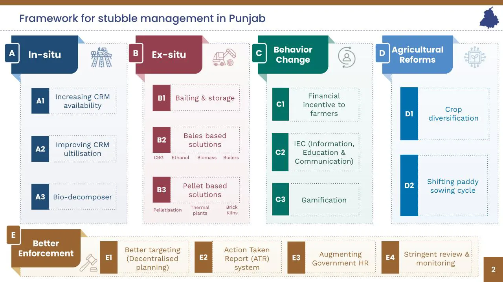

A high-residue crop dominates
Procurement, policy and established farm practices reinforce paddy cultivation at scale.

The system behind the fire
Burning is the final step in a chain of constrained choices. The system repeatedly makes it the fastest, cheapest and most certain option available to a farmer.
Follow the decision ↓01 / Root causes
Five pressures accumulate across the crop cycle. Addressing only the final act of burning leaves the underlying system unchanged.
Procurement, policy and established farm practices reinforce paddy cultivation at scale.
Late harvesting leaves a narrow window to clear fields and sow wheat on time.
Combine harvesters save labour but leave loose straw and standing stubble.
Machinery, fuel, labour, collection and transport must be arranged at peak demand.
Aggregation, storage, logistics and dependable industrial offtake remain limited.
Source: GDi, Understanding the Crisis and Pathways to Address Stubble Burning in India
02 / The farmer’s default setting
The questions are different, but the answer is repeatedly the same. Together, these dead ends funnel the farmer towards burning.
Fast field clearance · almost no immediate cost · low perceived risk
Watch the explainer
The video grounds this decision pathway in the realities of Punjab’s crop cycle.
Open on YouTube ↗03 / Framework for action
The framework connects immediate field-level alternatives with farmer behaviour, enforcement, markets and long-term agricultural reform.

From diagnosis to action